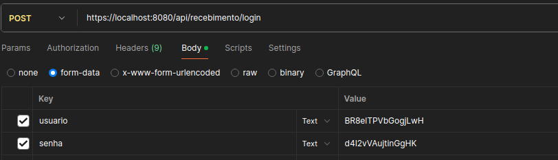
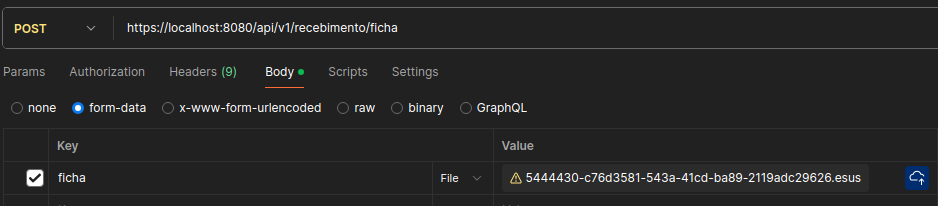
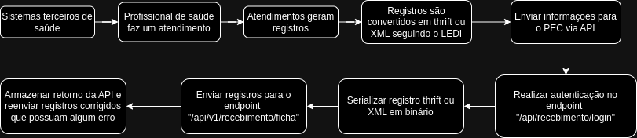

API para transmissão de registros no formato LEDI
1. Objetivo
Este documento apresenta as etapas necessárias para conseguir enviar registros no formato LEDI via API.
2. Geração da credencial
1. A geração das credenciais deve estar habilitada somente para as instalações que possuam HTTPS configurado.
2. A geração da credencial deve ser feita pelo Administrador da Instalação no módulo "Integração > Credenciais de integração". Sendo necessário informar os seguintes dados dos integradores:
- Para cadastro de "Pessoa física" o registro deve conter as seguintes informações da pessoa que será responsável pela integração: Nome, CPF, E-mail e Nome da credencial;
- Para cadastro de "Pessoa jurídica" o registro deve conter as seguintes informações da pessoa que será responsável pela integração: Nome, CNPJ, E-mail e Nome da credencial.
3. Após realizar o cadastro de um integrador o sistema deve gerar o usuário e a senha que serão utilizados na autenticação da API. Sendo o Administrador da Instalação responsável por repassar essas informações para os integradores. Não deve ser possível recuperar um usuário e senha gerados previamente, caso o usuário e a senha sejam perdidos é necessário gerar outra credencial.
3. Endpoint, variáveis e respostas da API
4. A API possui dois endpoints disponíveis: "[url_instalacao]/api/recebimento/login" e "[url_instalacao]/api/v1/recebimento/ficha".
5. O endpoint "/api/recebimento/login" deve ser utilizado para realizar a autenticação do envio através da requisição do tipo POST. Sendo aceitas as variáveis "usuario" e "senha". As respostas possíveis são:
- Resposta de sucesso: a API deve retornar um cookie chamado "JSESSIONID". Esse cookie deve ser enviado em requisições futuras como forma de autenticação;
- Resposta de erro: deve ser retornado um código e mensagem do erro.
6. O endpoint "/api/v1/recebimento/ficha" deve ser utilizado para realizar o envio dos registros no formato LEDI através da requisição do tipo POST. Sendo aceito a variável ficha. O valor da variável deve ser um arquivo serializado em binário e o nome desse arquivo deve ser "uuid do registro eletrônico no formato LEDI" + ".esus". Segue um exemplo de ficha nomeada corretamente: "0000007-cfdd9b1b-2c4d-4759-b254-76564ec219f3.esus".
7. As respostas possíveis para o endpoint "/api/v1/recebimento/ficha" são:
- Respostas de sucesso: deve ser retornado o status 200;
- Resposta de erro: deve ser retornado um código e uma mensagem do erro. Informando quais informações devem ser corrigidas para que a ficha seja aceita.
8. Sugere-se que o erro retornado pela API seja armazenado pelo próprio integrador. Possibilitando assim correção de registros no formato LEDI que foram enviadas com erro.
4. Repositório público no Github com exemplos de serialização e envio de informações via API
9. O repositório contém explicações detalhadas sobre como serializar os registros e transmiti-los via API de transmissão. Serão disponibilizados exemplos na linguagem java.
5. Exemplos de requisição
 Protótipo 1 - Requisição POST no endpoint de autenticação
 Protótipo 2 - Requisição POST para envio de registros no formato LEDI
6. Fluxograma
10. O propósito desse fluxograma é facilitar a compreensão do funcionamento da API.
 Fluxograma 1 - Fluxograma para facilitar a compreensão do funcionamento da API
7. Dicionário de dados
11. Relação de endpoint, tipos de requisição e parâmetros:
| Endpoint | Tipo de requisição | Parâmetros | Observação |
|---|---|---|---|
| api/recebimento/login | POST | usuario | Utilizando o usuário fornecido nas credenciais geradas pelo PEC para a autenticação da API |
| api/recebimento/login | POST | senha | Utilizando a senha fornecida nas credenciais geradas pelo PEC para a autenticação da API |
| api/v1/recebimento/ficha | POST | ficha | Enviar o path dos modelos de informação do LEDI na requisição. O nome do arquivo deve ser “uuidDadoSerializado”, que está presente no modelo de informação |
12. Erros que podem ser retornados pelo endpoint "/api/recebimento/login":
| Código | Mensagem | Descrição |
|---|---|---|
| 400 | Serviço indisponível | Ocorre quando a flag relacionada a API de transmissão está inativa |
| 400 | Usuário ou senha inválidos | - |
| 400 | Credencial inativa | - |
| 400 | Essa instalação foi desativada. Para acessar a nova instalação é necessário acessar o link: [NOVO_LINK_UNIFICACAO_BASE] | Ocorre quando a instalação foi unificada |
13. Erros que podem ser retornados pelo endpoint "/api/v1/recebimento/ficha":
| Código | Mensagem | Descrição |
|---|---|---|
| 400 | Erro de validação | Ocorre quando a ficha possui erros de validação em relação ao LEDI |
| 400 | Várias, vai sinalizar erro com o formato do arquivo recebido | Ocorre ao tentar deserializar o arquivo em thrift ou xml. Exemplo de erro: sistema recebe um arquivo zip que não é esperado |
| 500 | Erro ao desserializar ficha | Ocorre quando acontece um erro inesperado na deserialização de um arquivo thrift |
| 500 | Erro ao ler ficha | Ocorre quando acontece um erro ao tentar ler bytes recebidos da ficha |
| 500 | Erro inesperado ao receber ficha | Ocorre em quaisquer outros erros não mapeados acima |